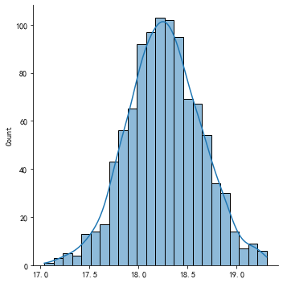
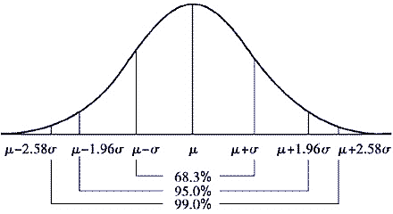
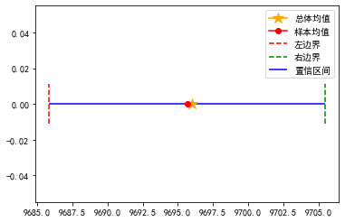
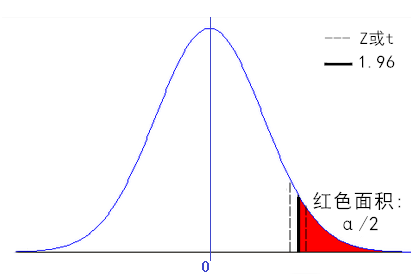
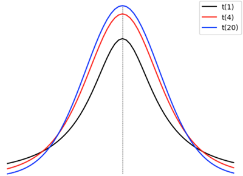

推断统计
推断统计, 通过样本推断总体的统计方法, 包括对总体的未知参数进行估计; 对关于参数的假设进行检查; 对总体进行预测预报等. 推断统计的基本问题可以分为两大类：一类是 参数估计 问题; 另一类是 假设检验 问题
1, 总体, 个体与样本
总体, 要研究对象的所有数据, 获取通常比较困难. 总体中的某个数据, 就是个体. 从总体中抽取部分个体, 就构成了样本, 样本中的个体数, 称为样本容量.
2, 参数估计
参数估计, 用样本指标(统计量)估计总体指标(参数). 参数估计有 点估计 和 区间估计 两种
2.01, 点估计
点估计是依据样本统计量估计总体中的未知参数. 通常它们是总体的某个特征值，如数学期望, 方差和相关系数等. 点估计问题就是要构造一个只依赖于样本的量，作为总体未知参数的估计值.
2.02, 区间估计
区间估计是根据样本的统计量, 计算出一个可能的区间(置信区间) 和 概率(置信度), 表示总体的未知参数有多少概率位于该区间.
注意:
点估计使用一个值来作为总体参数值, 能给出具体值, 但易受随机抽样影响, 准确性不够
区间估计使用一个置信区间和置信度, 表示总体参数值有多少可能(置信度)会在该范围(置信区间)内, 能给出合理的范围和信心指数, 不能给出具体值
2.03, 中心极限定理
要确定置信区间与置信度, 我们先要知道总体与样本之间, 在分布上有着怎样的联系. 中心极限定理(独立同分布的中心极限定理)给出了它们之间的联系:
如果总体均值为 $\mu$, 方差为 $\sigma^{2}$, 我们进行随机抽样, 样本容量为 n, 当 n 增大时，则样本均值 $\bar{X}$ 逐渐趋近服从均值为 $\mu$, 方差为 $\sigma^{2} / n$ 的正态分布：
$$\bar{X} \sim N\left(\mu, \sigma^{2} / n\right)$$说明:
进行多次抽样，每次抽样会得到一个均值, 这些均值会围绕在总体均值左右，呈正态分布
当样本容量 n 足够大时, 抽样样本均值的均值 ≈ 样本均值
$\bar{X}$ ≈ 总体均值
$\mu$, 样本均值分布的标准差等于
$\sigma / \sqrt{n}$
样本均值分布的标准差, 称为标准误差, 简称标准误
模拟证明:
import numpy as np
import pandas as pd
import matplotlib.pyplot as plt
import seaborn as sns
plt.rcParams['font.family'] = 'SimHei'
plt.rcParams['axes.unicode_minus'] = False
# 定义非正态分布总体(也可以是正态分布)
data = np.random.normal(20, 5, size=10000)
data.sort()
all_ = np.random.choice(data[0:8000], size=10000)
# sns.displot(all_)
# 将总体的均值和标准差设为已知条件
print('总体均值:', all_.mean(), '总体标准差:', all_.std())
# 创建存放每次抽样的平均值的数组(初始值为 0)
mean_arr = np.zeros(1000)
# 循环抽取 1000 个样本, 每次抽 100 个
for i in range(len(mean_arr)):
mean_arr[i] = np.random.choice(all_, size=100, replace=False).mean()
# 验证结果
print('样本均值:', mean_arr[1], '样本均值的均值:', mean_arr.mean(),
'标准误差:', mean_arr.std(), '偏度:', pd.Series(mean_arr).skew(), sep='\n')
sns.displot(mean_arr, kde=True)
plt.show()
总体均值: 18.270423532980452 总体标准差: 3.8201265113791596
样本均值:
18.194948520041606
样本均值的均值:
18.26385715935595
标准误差:
0.373202226318143
偏度:
0.00746666188264042

2.04, 正态分布的特性
正态分布: $X \sim N\left(\mu, \sigma^{2}\right)$

以均值为中心:
在 1 倍标准差内包含约 68.2% 的样本数据
在 2 倍标准差内包含约 95.4% 的样本数据
在 3 倍标准差内包含约 99.7% 的样本数据
证明:
# 定义标准差
scale = 10
# 定义数据
x = np.random.normal(0, scale, size=100000)
# 计算
for times in range(1, 4):
y = x[(x > -times * scale) & (x < times * scale)]
print(f'{times}倍的标准差:')
print(f'{len(y) * 100 / len(x)}%')
1倍的标准差:
68.206%
2倍的标准差:
95.354%
3倍的标准差:
99.711%
2.05, 重要结论
根据中心极限定理和正态分布的特性, 如果总体标准差为 $\sigma$, 对总体进行一次抽样, 如果样本足够大, 则样品均值 $\bar{X}$ 服从正态分布, 该均值约有 95.4% 的概率会在 2 倍的标准误差 ( $\mu - 2\sigma / \sqrt{n}, \mu + 2\sigma / \sqrt{n}$) 范围内, 并且该样本均值约等于总体均值 $\mu$. 从而, 可以利用这一结论, 对总体均值进行区间估计.
结论验证:
# 随机生成总体均值, 其值未知
mean = np.random.randint(0, 10000)
# 总体的标准差已知为 50
std = 50
# 定义总体数据
all_ = np.random.normal(mean, std, size=100000)
# 从总体抽取 100 个元素构成样本
sample = np.random.choice(all_, size=100, replace=False)
# 计算样本均值
sample_mean = sample.mean()
print('样本均值:', sample_mean)
# 计算样本的标准误差
se = std / np.sqrt(n)
# 计算置信区间 95%置信度
min_ = sample_mean - 1.96 * se
max_ = sample_mean + 1.96 * se
print('置信区间(95%置信度):', (min_, max_))
# 区间估计
print(f'总体均值有 95% 的概率在{(min_, max_)}区间内')
print('总体均值:', mean)
# 绘图辅助
plt.plot(mean, 0, marker='*', color='orange', ms=12, label='总体均值')
plt.plot(sample_mean, 0, marker='o', color='r', label='样本均值')
plt.hlines(0, xmin=min_, xmax=max_, color='b', label='置信区间')
plt.axvline(min_, 0.4, 0.6, color='r', ls='--', label='左边界')
plt.axvline(max_, 0.4, 0.6, color='g', ls='--', label='右边界')
plt.legend()
plt.show()
样本均值: 9695.658932218576
置信区间(95%置信度): (9685.858932218576, 9705.458932218575)
总体均值有 95% 的概率在(9685.858932218576, 9705.458932218575)区间内
总体均值: 9696

3, 假设检验
假设检验(显著性检验), 先对总体做出假设, 然后通过判断样本与总体之间是否存在显著性差异, 来验证总体的假设
假设检验使用了一种类似于 “反证法” 的推理方法，它的特点是：
-
先对总体做出两个完全相反的假设, 原假设(设为真) 和 备择假设, 计算后导致不合理现象产生，则拒绝原假设, 接受备择假设, 反之接受原假设, 放弃备择假设
-
这种 “反证法” 不同于一般的反证法. 所谓不合理现象产生，并非指形式逻辑上的绝对矛盾，而是基于小概率原理：概率很小的事件在一次试验中几乎是不可能发生的，若发生了，就是不合理的.
-
怎样才算 “小概率”, 通常可将概率不超过 0.05 的事件称为 “小概率事件” ，也可视具体情形而取 0.1 或 0.01 等. 在假设检验中常记这个概率为 α，称为显著性水平
假设检验可分为正态分布检验, 正态总体均值检验, 非参数检验三类, 本文只介绍 正态总体均值检验 , 包括 Z检验 和 t检验 两种情况
3.01, 关键概念:
对总体参数做出两个完全对立的假设, 分别为:
原假设(零假设)
$H_{0}$
备择假设(对立假设)
$H_{1}$
双边假设检验 :
$H_{0}: \mu=\mu_{0}, H_{1}: \mu \neq \mu_{0}$
单边假设检验 :
$H_{0}: \mu \geq \mu_{0}, H_{1}: \mu<\mu_{0}$ (左边检验)
$H_{0}: \mu \leq \mu_{0}, H_{1}: \mu>\mu_{0}$ ( 右边检验 )
$\mu$ 为总体均值,
$\mu_{0}$ 为假设均值
显著性水平 : 根据需要设定的小概率事件的概率 α (1 - α 为置信度)
检验统计量 (Z 和 t): 用来判断样本均值与总体均值是否存在显著性差异
P值: 通过检验统计量计算而得的概率值, 表示原假设可被拒绝的最小值(或可支持原假设的概率):
P ≤ α, 原假设可被拒绝的最小值比显著性水平还低, 原假设可被拒绝, 则拒绝原假设
P > α, 原假设可被拒绝的最小值大于显著性水平, 原假设不可被拒绝, 支持原假设
3.02, 假设检验的步骤
设置原假设与备择假设
设置显著性水平 α
根据问题选择假设检验的方式
计算统计量(Z 或 t)
计算 P值(Z 或 t 围成的分布面积)
根据 P值 与 α值, 决定接受原假设还是备择假设
例, 某车间用一台包装机包装葡萄糖. 袋装糖的净重是一个随机变量，它服从正态分布. 当机器正常时，其均值为 0.5kg，标准差为 0.015kg.
某日开工后为检验包装机是否正常，随机地抽取它所包装的糖 9 袋，称得净重为(kg):
0.497, 0.506, 0.518, 0.524, 0.498, 0.511, 0.520, 0.515, 0.512
判断下面说法是否正确:
(1) 机器正常
例, 某车间用包装机包装葡萄糖. 袋装糖的净重是一个随机变量，它服从正态分布. 随机地抽取糖 9 袋，称得净重为(kg):
0.497, 0.506, 0.518, 0.524, 0.498, 0.511, 0.520, 0.515, 0.512
判断下面说法是否正确:
(2) 该车间袋装糖净重均值为 0.5kg
(3) 该车间袋装糖净重均值不少于 0.5kg
(4) 该车间袋装糖净重均值不多于 0.5kg
3.03, Z检验
Z检验适用于: 总体正态分布且方差已知, 样本容量较大(一般 ≥ 30)
Z统计量计算公式:
$$Z=\frac{\bar{x}-\mu_{0}}{S_{\bar{x}}}=\frac{\bar{x}-\mu_{0}}{\sigma / \sqrt{n}}$$
$\bar{x}$: 样本均值
$\mu_{0}$: 假设的总体均值
$S_{\bar{x}}$: 样本的标准误差
$\sigma$: 总体的标准差
$n$: 样本容量
检验说法(1): 机器正常
双边检验:
原假设机器正常:
$H_{0}: \mu=\mu_{0}=0.5kg$
备择假设机器不正常:
$H_{1}: \mu \neq \mu_{0} \neq 0.5kg$
设置显著性水平: α = 0.05
import numpy as np
from scipy import stats
# 样本已知
a = np.array([0.497, 0.506, 0.518, 0.524, 0.498, 0.511, 0.520, 0.515, 0.512])
# 总体均值和标准差已知
mean, std = 0.5, 0.015
# 计算样本均值
sample_mean = a.mean()
# 计算样本标准误差
se = std / np.sqrt(len(a))
# 计算 Z统计量
Z = (sample_mean - mean) / se
print('Z统计量:', Z)
# 计算 P值, 双边检验: Z值与其右边曲线围成的面积的 2 倍
P = 2 * stats.norm.sf(abs(Z))
print('P值:' , P)
Z统计量: 2.244444444444471
P值: 0.02480381963225589

由结果可知, Z值 超过了 1.96, 由 Z值 与其右边曲线围成的面积的 2 倍, 必然小于 α(1.96 与其右边曲线围成的面积的 2 倍), 计算结果 P < α, 因此拒绝原假设, 接受备择假设, 机器不正常
3.04, t检验
t检验适用于: 总体正态分布, 方差未知, 样本数量较少(一般 < 30), 但是随着样本容量的增加, 分布逐渐趋于正态分布

t统计量计算公式:
$$t=\frac{\bar{x}-\mu_{0}}{S_{\bar{x}}}=\frac{\bar{x}-\mu_{0}}{S / \sqrt{n}}$$
$\bar{x}$: 样本均值
$\mu_{0}$: 假设的总体均值
$S_{\bar{x}}$: 样本的标准误差
$S$: 样本的标准差
$n$: 样本容量
双边检验 :
检验说法(2): 该车间袋装糖净重均值为 0.5kg
原假设, 该车间袋装糖净重均值为 0.5kg:
$H_{0}: \mu=\mu_{0}=0.5kg$
备择假设, 该车间袋装糖净重均值不为 0.5kg:
$H_{1}: \mu \neq \mu_{0} \neq 0.5kg$
设置显著性水平: α = 0.05
# 样本已知
a = np.array([0.497, 0.506, 0.518, 0.524, 0.498, 0.511, 0.520, 0.515, 0.512])
# 假设的总体均值已知
mean = 0.5
# 计算样本均值
sample_mean = a.mean()
# 计算样本标准差
std = a.std()
# 计算 t统计量
t = (sample_mean - mean) / ( std / np.sqrt(len(a)))
print('t统计量:', t)
# 计算 P值, df 是自由度: 样本变量可自由取值的个数
P = 2 * stats.t.sf(abs(t), df=len(a) - 1)
print('P值:', P)
t统计量: 3.802382179137283
P值: 0.005218925008708613
P < α, 拒绝原假设, 接受备择假设: 该车间袋装糖净重均值不为 0.5kg
还可以通过 scipy 提供的方法 ttest_1samp 来进行 t检验计算:
from scipy import stats
stats.ttest_1samp(a, 0.5)
Ttest_1sampResult(statistic=3.584920298041139, pvalue=0.007137006417828698)
左边检验 :
检验说法(3): 该车间袋装糖净重均值不少于 0.5kg
原假设, 该车间袋装糖净重均值不少于 0.5kg:
$H_{0}: \mu \geq \mu_{0}$
备择假设, 该车间袋装糖净重均值少于 0.5kg:
$H_{1}: \mu<\mu_{0}$
设置显著性水平: α = 0.05
# t统计量上述已经计算, 只需计算 P值: t统计量与其左边曲线围成的面积
P = stats.t.cdf(t, df=len(a) - 1)
print('P值:', P)
P值: 0.9973905374956458
P > α, 接受原假设, 该车间袋装糖净重均值不少于 0.5kg
右边检验 :
检验说法(4): 该车间袋装糖净重均值不多于 0.5kg
原假设, 该车间袋装糖净重均值不多于 0.5kg:
$H_{0}: \mu \leq \mu_{0}$
备择假设, 该车间袋装糖净重均值多于 0.5kg:
$H_{1}: \mu>\mu_{0}$
设置显著性水平: α = 0.05
# 计算 P值: t统计量与其右边曲线围成的面积
P = stats.t.sf(t, df=len(a) - 1)
print('P值:', P)
P值: 0.0026094625043543065
P < α, 拒绝原假设, 接受备择假设, 该车间袋装糖净重均值多于 0.5kg